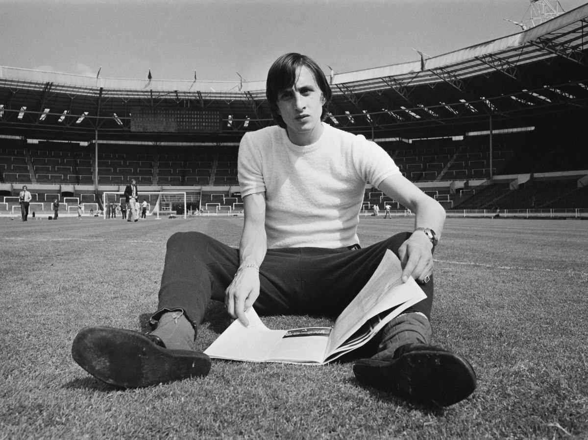
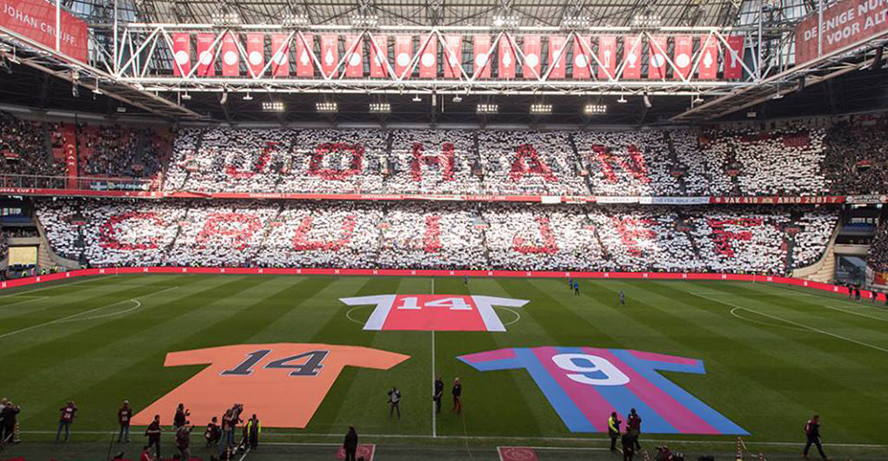

AMSTERDAM 1947 - 2016 LA ETERNIDAD...
Hendrik Johannes Cruijff, o más conocido internacionalmente como Johan Cruyff (Amsterdam, 25 de abril de 1947 - Barcelona, 24 de marzo de 2016), fue un jugador y entrenador de fútbol neerlandés. Es considerado por la IFFHS como el mejor jugador de Europa y el segundo mejor jugador del siglo XX, detrás de Pelé. También fue elegido por 30 de los 34 ganadores del Balón de Oro (de 1956 a 1999) como el tercer mejor jugador del siglo XX, detrás de Pelé y Diego Maradona. Militó diez temporadas en el primer equipo del Ajax de Ámsterdam. Luego fichó en 1973 por el F. C. Barcelona, del que se marcharía en 1978 para recalar en la North American Soccer League. Allí estuvo tres temporadas, intercaladas con una temporada en el Levante UD que militaba en la Segunda División de España. Finalmente volvió en 1981 a la liga neerlandesa, militando dos temporadas en el Ajax y su última temporada como jugador en el Feyenoord de Róterdam. Obtuvo cinco Copas, ocho Ligas, tres Copas de Europa, una Copa Intercontinental y una Supercopa de Europa con el Ajax, una Liga y una Copa con el Feyenoord, y una Liga y una Copa con el F. C. Barcelona. Recibió el Balón de Oro en tres ocasiones (1971, 1973 y 1974), marca que comparte con Michel Platini y Marco Van Basten. Cruyff fue el más famoso exponente de la filosofía de fútbol conocida como «fútbol total», desarrollada por Rinus Michels. En 1984, tras retirarse como jugador de los terrenos de juego, Cruyff se convirtió en entrenador del Ajax y logró dos Copas Neerlandesas y una Recopa de Europa, más tarde se convertiría en entrenador y presidente de honor del F. C. Barcelona, club del que fue un influyente asesor. Además fue colaborador de la federación catalana en proyectos deportivos y sociales. Lograría una Copa de España, cuatro Ligas de España, tres Supercopas de España, una Recopa de Europa, una Copa de Europa y una Supercopa de Europa como entrenador del Barça. El 14 de diciembre de 2020 fue incluido como delantero centro en el segundo Dream Team histórico del Balón de Oro.
(Amsterdam, 1947 - Barcelona, 2016) Hijo de una familia de modesta situación económica, a los diez años ingresó en el Ajax de Amsterdam, club en el cual permanecería hasta 1973 y con el que obtendría seis títulos de Liga y tres copas de Europa. Entre 1973 y 1978 jugó en el F. C. Barcelona, con el cual consiguió el Campeonato de Liga de 1974. Durante dichos años fue nombrado mejor futbolista europeo en tres ocasiones (1971, 1973 y 1974) y en 1974 fue designado mejor jugador del Mundial disputado aquel año. Tras su paso por el F. C. Barcelona recaló brevemente en la liga estadounidense y luego en el Levante español, para incorporarse de nuevo al Ajax como jugador, poco antes de retirarse de la práctica deportiva. Su posterior faceta de entrenador, que inició en el Ajax, estaría tan plagada de éxitos como la de jugador. Destacó sobre todo por su talante ofensivo y logró sus mayores victorias con el F. C. Barcelona, club al que entrenó entre 1988 y 1996. Durante dichos años logró cuatro ligas consecutivas (1991, 1992, 1993 y 1994) y una copa de Europa (1992). En 1998 creó la Universidad Johan Cruyff, que imparte estudios para la administración y gestión de entidades deportivas. En 1999 fue homenajeado en Barcelona y Amsterdam y fue nombrado asesor de la UEFA.
La infancia de Johan Cruyff, Jopie según le llamaba cariñosamente su madre, estuvo ligada a un balón de fútbol y al Ajax de Ámsterdam, pues con solo diez años fue escogido entre otros 300 niños para formar parte de las categorías inferiores del club. Su madre trabajaba como personal de limpieza en el club y convenció al entrenador para que seleccionara a Johan para formar parte de sus jugadores. El 8 de julio de 1959, cuando tenía doce años, su padre falleció de un ataque al corazón, por lo que se vio obligado a ayudar con la economía familiar. Un año después abandonaría los estudios para dedicarse exclusivamente al fútbol y al año siguiente encontraría una nueva figura paterna en el cuidador del campo del Ajax al que ayudaba en su trabajo. El entrenador Rinus Michels preparó un programa de ejerccio físico para Johan, concebido especialmente para desarrollar su complexión endeble, con el fin de que fuera capaz de soportar los rigores de una carrera profesional. Dentro de la estructura del Ajax pasó rápidamente por todas las categorías inferiores (incluidos trabajos como el de limpiabotas y cuidador del vestuario), hasta que consiguió llegar a la primera plantilla, por recomendación de Vic Buckingham, y debutar en la Primera Liga neerlandesa a la edad de 17 años, marcando el único gol de su equipo el día de su debut. Johan Cruijff (1965). Johan Cruyff fue el impulsor de los éxitos del Ajax de mediados de los años 60 hasta inicios de los años 70. El partido de su debut se celebró el 15 de noviembre de 1964, enfrentándose al GVAV Groningen. Se producía así el inicio de la carrera del considerado mejor jugador europeo de la historia, que contribuiría en hacer al Ajax el claro dominador del fútbol del viejo continente, consiguiendo 6 Ligas y 4 Copas, 3 Copas de Europa, 1 Copa Intercontinental y 1 Supercopa de Europa. Cruyff comenzó realmente a ganarse un puesto en la temporada 1965-66, consolidándose como jugador del primer equipo tras anotar dos goles en el Torneo Olímpico contra el DWS Amsterdam el 24 de octubre de 1965 (acabando el partido con una victoria por 2-0). En los siete partidos de invierno, marcó ocho veces y en marzo de 1966 logró su primer 'hat-trick' en un partido de liga contra el Telstar (ganado por 6-2). Cuatro días más tarde, en un partido de Copa contra el BV Veendam (7-0), marcó 4 de los goles. En total esa temporada, Cruyff anotó 25 goles en 23 partidos y el Ajax ganó el Campeonato de Liga. En la temporada 1966-67 el Ajax volvió a ganar el Campeonato de Liga, pero también ganó Copa de los Países Bajos, el primer «doblete» de Cruyff. Johan terminó la temporada como el máximo goleador de la Eredivisie con 33 goles. En la temporada 1967-68, Cruyff ganó la liga por tercer año consecutivo. También fue nombrado futbolista neerlandés del año por segunda vez consecutiva, una hazaña que repetiría en 1969. El 28 de mayo de 1969, Cruyff participó en su primera final de la Copa de Europa contra el AC Milan, pero el equipo italiano terminó ganando 4-1. En la temporada 1969-70, Cruyff ganó su segundo «doblete» de Liga y Copa, pero al comienzo de la temporada 1970-1971 sufrió una larga lesión en la ingle, no pudiendo regresar a jugar hasta el 30 de octubre de 1970 contra el PSV. En este partido no pudo llevar su habitual número 9 ya que estaba siendo usado por Gerrie Mühren, por lo que utiliza el número 14, algo en principio extraño, pues en los años 70 no existían las camisetas personalizadas y los números superiores al 11 estaban reservados a los suplentes. Al día siguiente se pudo leer en la prensa neerlandesa que parecía que ya todo estaba bien con Cruyff, excepto el número 14 en su espalda. La superstición del jugador, y quizá su rebeldía ante la prensa, hicieron que desde entonces fuese su número favorito, llevándolo en los partidos como internacional y en sus futuros equipos. La figura de Johan Cruyff se convirtió en un referente del mundo del fútbol, consiguiendo en tres ocasiones el Balón de Oro, otorgado por la revista francesa France Football, en los años 1971, 1973 y 1974 (estos dos últimos vistiendo ya la camiseta del Fútbol Club Barcelona).
La ruptura con el Ajax llegó en la temporada 1973-74, cuando el club de la capital neerlandesa negoció el traspaso de Cruyff al Real Madrid. Al saberlo el jugador, hizo muestra de una rebeldía que también le caracterizó durante toda su carrera, no fichando por el Real Madrid, sino por su máximo rival, el Barcelona. El traspaso de Cruyff al Barcelona se convirtió en el más caro en la historia del fútbol hasta ese momento (60 millones de pesetas) y firmó un contrato de 12 000 dólares mensuales. Cruyff fue recibido en Barcelona como un auténtico ídolo, y es que la afición blaugrana veía en él la única esperanza de que su equipo saliese a flote, pues se encontraba penúltimo en la clasificación de una liga que hacía catorce años que no ganaba. Y Johan no defraudó a nadie: en su debut en la liga, el 28 de octubre de 1973 ante el Granada CF, ayudó con 2 tantos, para conseguir un resultado de 4-0. El equipo dio un giro desde entonces, consiguiendo no perder ni un solo encuentro desde la llegada del apodado el Flaco, y logrando ganar por fin el campeonato Primera División de España 1973/74 después de largos 14 años, la novena liga para el club. Entre los futbolistas más destacados que lo acompañaban en el Barça estaban el peruano Hugo Sotil, Carles Rexach y Asensi, con ellos y bajo su batuta, el equipo consiguió un hito que fue difícil igualar (hasta el 2010), y es que venció por 0-5 en su visita al Santiago Bernabéu del Real Madrid, el 17 de febrero de 1974. Acabó la temporada con 16 goles en su haber, destacándose un gol de «espuela» (con el talón), convertido al Atlético de Madrid en un partido en el Camp Nou, siendo uno de los goles por los que más se le recuerda y que le granjeó el sobrenombre de holandés volador. En las dos temporadas siguientes el club no consiguió ningún título, aunque Johan continuó marcando la diferencia como estrella futbolística. En la temporada 1975-76 jugó 29 partidos de Liga, en los que marcó seis goles; No jugó la Copa, (sólo para jugadores nacionales) y nueve encuentros de Copa de Europa, donde no marcó. Esa misma temporada comienzan sus problemas con el entrenador, Hennes Weisweiler, a raíz de una sustitución en el partido de Liga contra el Sevilla FC y que perdieron por 2-0. El entrenador sustituyó a Johan por el joven Mir y justificó el cambio aduciendo que Johan no jugaba bien fuera del Camp Nou. Johan abandonó el campo muy enfadado y anunció que el 30 de junio abandonaría el club. Finalmente, dado que el público estaba del lado de Johan, el entrenador dimitió, siendo sustituido por Laureano Ruiz. En 1975 recibió el Balón de bronce que lo reconoció como tercer mejor jugador del continente. La temporada 1976-77 la finalizó con 30 partidos de Liga, en los que marcó 12 tantos; No jugó la Copa del Rey, (sólo para jugadores nacionales); y 7 de Copa de Europa, en los que convirtió 2 goles. En la temporada 1977-78, su última temporada como blaugrana, el Barça consiguió la Copa del Rey, y Johan marcó 11 goles en las 3 competiciones. Sus problemas con la directiva le hacen abandonar el fútbol español. Sin embargo, su estancia en Barcelona dejó una gran huella en su persona, pues se integró muy rápidamente en la cultura catalana, hasta el punto de llamar a su tercer hijo, Jordi. Esto le supuso problemas con el régimen franquista de la España de entonces, al cual siempre se mostró contrario, que no permitía el empleo de nombres en catalán.
Tras un breve período de inactividad, en el que se le hizo un partido homenaje por parte del Ajax el 7 de noviembre de 1978 como despedida y agradecimiento por todos los años como ajaceid y que el Ajax perdió 8-1 contra el Bayern de Múnich, Cruyff decidió enrolarse en la North American Soccer League (NASL), cuando ya tenía 30 años. En aquella época, el New York Cosmos que estaba dirigido por Warner Bros. y por los hermanos Nesuhi y Ahmed Ertegün, intentó fichar a Cruyff para su plantilla en unas duras negociaciones, calificadas así por los propios hermanos Ertegun en una entrevista del documental «Once in a Lifetime», pero dichas negociaciones no llegaron a buen cauce y Johan acabó fichando por Los Angeles Aztecs en 1979. Debutó el 23 de mayo de dicho año marcando 2 goles y con un resultado final de 3-0. Convirtió un total de 16 goles en 27 partidos y fue elegido el Mejor Jugador de la Liga Americana. La temporada siguiente, en 1980, fichó por los Washington Diplomats, con los que jugó 27 partidos y marcó 10 goles. Ese año fue incluido en el equipo ideal de la Liga. El año 1981 lo empezaría en la Segunda División de España, jugando varios meses con el Levante UD al que llegó en el mes de marzo y donde anotó dos goles (ambos contra el Real Oviedo en un 2-2) en 10 partidos, para posteriormente finalizarlo en Washington de nuevo, jugando cinco partidos en los que marcó dos goles.
La carrera de Cruyff parecía estar llegando a su fin, pero sorprendentemente fichó de nuevo por el Ajax con la edad de 34 años. Durante sus dos temporadas en el club de su infancia consiguió ganar la liga en ambas, además de una Copa. En su última temporada en el Ajax, la 1982-83, Cruyff creó el penalti indirecto: en lugar de tirar a puerta sirvió una asistencia para su compañero Jesper Olsen, quien le devolvió el pase para que Cruyff pudiera marcar. Esa última temporada resultó especialmente complicada para el jugador, ya que se produjo la muerte de quien había sido para él su segundo padre, el cuidador del campo del Ajax. Cruyff cayó en un bajo estado de ánimo, y el presidente del Ajax llegó a declarar que al jugador le faltaban capacidades para seguir jugando en la primera división neerlandesa, razón por la cual no le renovó el contrato.
Y es así como salió a relucir de nuevo el espíritu rebelde de Cruyff, que decidió fichar por el máximo rival del Ajax, el Feyenoord de Róterdam, contando ya con 37 años. En la que fue su última temporada consiguió hacer doblete, ganando la Liga y la Copa, además de ser designado como mejor jugador de la Eredivisie. Su carrera como jugador no pudo terminar de manera más triunfal. Cruyff se caracterizó por su fuerte temperamento, el cual le trajo a menudo problemas, como cuando fue expulsado contra la selección de Checoslovaquia en su segundo partido como internacional y suspendido de la selección neerlandesa durante un año o como cuando perdió el brazalete de capitán del Ajax en una votación de sus compañeros de equipo en 1973.
En septiembre de 1966, Johan debutó como jugador de la selección neerlandesa en un partido frente a la selección de Hungría, marcando el empate a 2 (resultado final) en el último minuto del partido. A pesar de ser un fijo en las convocatorias del seleccionado, tan solo disputó la Copa Mundial de Fútbol de 1974 en Alemania Federal. El equipo estaba encuadrado dentro del grupo 2 de la primera ronda junto con las selecciones de Uruguay, Suecia y Bulgaria. Los neerlandeses obtuvieron la primera posición del grupo tras cosechar 2 victorias (2-0 frente a Uruguay y 4-1 frente a Bulgaria) y un empate (0-0 contra Suecia). En la segunda ronda quedaron ubicados dentro del grupo A, junto con las selecciones de Brasil, Argentina y Alemania Democrática. El conjunto neerlandés desplegó un juego que pasaría a la posteridad como Fútbol Total y que giraba en torno a la figura de Johan Cruyff. Esta generación sería recordada como la Naranja Mecánica, siendo considerada uno de los equipos más grandes de la historia del fútbol. El primer partido de esta segunda fase se disputó el 26 de junio en el estadio Gelsenkirchen y enfrentó al combinado neerlandés con la selección argentina. El partido acabó con un contundente 4-0 y Cruyff marcó el primer y el último gol, cuajando una gran actuación en el partido. El siguiente encuentro frente a la selección de Alemania Democrática lo ganan por 2-0. El último partido de esta ronda se disputa el 3 de julio y la selección neerlandesa vence por 2-0 al combinado brasileño, uno de los goles marcados por Johan. Selección neerlandesa en la final del Mundial de Alemania 1974, enfrentándose a Alemania Federal. La final se decantó del lado germano, por 2-1. Cruyff es el primer jugador de la derecha, con el brazalete de capitán del equipo. Momento de la final del Mundial de 1974, en el que Cruyff conduce la pelota. La final del Mundial se disputó el 7 de julio y tiene como protagonistas a la selección de los Países Bajos, con Cruyff al frente, y a la selección de Alemania Federal, capitaneada por Franz Beckenbauer. En el primer minuto de la final, tras 16 pases entre los neerlandeses y sin que los alemanes tocaran el balón acabó con el penalti de Uli Hoeness sobre Cruyff y que Neeskens marcaría. Alemania logró empatar, y antes del final del primer tiempo Gerd Müller hizo el segundo tanto. Después la Naranja mecánica desplegó su gran fútbol, pero no les alcanzó para vencer a los germanos, quienes obtuvieron el título. Sin embargo, Johan obtendría el galardón como Mejor Futbolista del torneo. Finalizado el Mundial, la selección debió jugar la etapa clasificatoria del Campeonato Europeo de 1976, en la que participó Cruyff. El equipo neerlandés estaba encuadrado dentro del grupo 5 junto a las selecciones de Italia, Polonia y Finlandia. El primer partido de la fase de clasificación, disputado el 25 de septiembre de 1974, enfrentó a Finlandia con la selección neerlandesa en el Olympiastadion de Helsinki. El resultado final fue de 3-1 y Johan marcó los dos primeros goles de su equipo que remontaban el tanto inicial de Rahja para los finlandeses y el tercero fue obra de Neeskens. El siguiente partido se jugó en casa el 20 de noviembre en el estadio De Kuip de Róterdam. El resultado final fue de 3-1 y Cruyff marcó los dos últimos goles de su equipo que deshacían el empate que hasta ese momento reinaba en el marcador por los goles de Boninsegna y de Rensenbrink. Johan no volvió a marcar ningún gol en el resto de partidos de la fase de clasificación en la que su selección quedó primera del grupo con cuatro victorias, dos derrotas y una puntuación final de 8 puntos (las victorias valían 2 puntos). En el año 1976, Johan también participó en la Eurocopa. La selección nacional neerlandesa se enfrentó en cuartos de final a la selección de Bélgica. El partido de ida se jugó el 25 de abril en el estadio De Kuip. El resultado de dicho partido fue de 5-0 para la selección de los Países Bajos. El partido de vuelta se jugó en el Estadio Rey Balduino en Bruselas el 22 de mayo, concluyendo el partido con un 2-1 a favor de los neerlandeses y en el que Cruyff marcó el segundo gol. En semifinales se enfrentaron contra la selección de Checoslovaquia, que venía de ganar a Gales, el 16 de junio en el Maksimir Stadium de Zagreb. Los checoslovacos vencieron por 3-1 en la prórroga y los neerlandeses tuvieron que conformarse con el partido por el tercer puesto contra el equipo anfitrión, Yugoslavia, que venía de perder 4-2 frente a la selección de Alemania federal. Este partido fue disputado el 19 de junio en el Maksimir Stadium, y acabó con un tanteo de 3-2 a favor de la selección nacional de los Países Bajos en la prórroga. Al finalizar el mundial de 1974, Cruyff ya había amenazado con no volver a disputar otro mundial, pues no estaba de acuerdo con las concentraciones a las que obligaba la Federación de los Países Bajos. A esto se sumó la situación política de Argentina, que en el momento de la disputa del mundial de 1978 se encontraba bajo una férrea dictadura militar, con graves y sistemáticas violaciones a los derechos humanos. Como medida de protesta, varios jugadores, entre los que se incluía Cruyff, renunciaron a participar en el mundial. Los tres motivos por los que Cruyff decidió no participar en el Mundial de Argentina fueron: la ya citada violación masiva de derechos humanos cometida por la dictadura imperante, por miedo a un posible secuestro y por no llegar a un acuerdo económico con la firma deportiva Adidas para llevar las tres tiras de la marca en la camiseta de la Selección. En el Mundial anterior ya tuvo problemas y vistió una camiseta con dos rayas de la marca que lo patrocinaba, Puma, al contrario que el resto de compañeros que lucieron las tres rayas de Adidas. En abril de 2008, Cruyff desveló que a finales de 1977, cuando jugaba con el F. C. Barcelona, fue víctima de un intento de secuestro junto a su familia. Unos delincuentes entraron en su domicilio y ataron a Cruyff y su esposa a una silla y les apuntaron con un fusil en la cabeza en presencia de sus hijos. Aunque lo cierto es que nunca fue un secreto, puesto que la noticia salió en todos los periódicos al día siguiente de producirse el dicho intento de secuestro. Al mostrar sus intenciones de abandonar la selección, tras la clasificación para el mundial, después del partido ganado frente a la selección vecina de Bélgica el 26 de octubre de 1977, se llevó a cabo una gran fiesta organizada por los diarios deportivos De Telegraaf y Avro's Sportpanorama. La celebración llegó hasta bien entrada la madrugada y acudieron numerosas celebridades de los Países Bajos, pero como trasfondo se encontraba la intención de hacer cambiar de parecer a Cruyff sobre su retiro. La cadena de televisión Tros había reunido 14 000 firmas que apoyaban la participación del jugador en el mundial, bajo el lema Trek Cruijff over de streep (Convencer a Cruyff), que también se pudo leer en pegatinas y camisetas. A pesar de todos los esfuerzos, Cruyff se ratificó en su decisión: «No me apetece explicar todas estas cosas porque solamente ocasionarán más discusiones y esto no me gusta nada. Tomé una decisión y me quedo con ella». Con este episodio se ponía fin a su participación con la selección de su país, tras disputar 48 partidos y marcar un total de 33 goles, participando en 33 de ellos como capitán. Cruyff también disputó dos encuentros con la selección de Cataluña en 1973 y 1976, ambos de carácter amistoso, debido a la no oficialidad del equipo bajo los organismos internacionales.
No pasó mucho tiempo desde su retiro como jugador profesional hasta su vuelta a los terrenos de juego. La temporada 1984-85 entró en el organigrama deportivo como director deportivo del Ajax, con Leo Beenhakker en el banquillo del equipo. Desde el primer momento Cruyff tenía las ideas muy claras del tipo de política deportiva que quería para el equipo. Inició así un proyecto a largo plazo, remodelando toda la estructura deportiva para adaptarla a una filosofía de juego lo más ofensiva posible, y cimentada en el cuidado minucioso de la cantera. Si Cruyff se caracterizó por un sistema de juego en el campo, fue por el 3-4-3, un sistema en el que se corrían grandes riesgos jugando con tres defensas, pero que proporcionaba un poder ofensivo muy grande. Impuso este sistema a todas las categorías inferiores del Ajax, y fruto de este trabajo con la cantera fue la generación de jóvenes compuesta por Ronald de Boer, su hermano Frank, Edgar Davids o Clarence Seedorf, que harían ganar al Ajax la Liga de Campeones en 1995. Y si Cruyff empezó el proyecto deportivo, él debía ser el encargado de llevarlo a cabo, firmando como entrenador del equipo el 6 de junio de 1985, aún sin tener carné y sin haber hecho el pertinente curso. Posteriormente mediante argucias consiguió el carné, y seguía sin haber hecho el curso, Sentado en el banquillo del Ajax permaneció dos temporadas y media, en las que el novedoso juego del equipo deslumbró a la Europa futbolística, hasta el punto de ser nombrado el mejor entrenador del mundo por la revista World Soccer Magazine. En esta etapa el Ajax ganó dos Copas de los Países Bajos y una Recopa de Europa, aunque no consiguió imponerse en la liga y no terminó la tercera temporada. A pesar de no haber realizado el curso de entrenador, pero con el beneplácito de Villar, fue contratado por el F. C. Barcelona el 4 de mayo de 1988, con el club sumido en una crisis deportiva similar a la de cuando llegó como jugador, incluso con los jugadores pidiendo el cese del presidente, José Luis Núñez, en lo que se denominó «el motín del Hesperia», por ser en dicho hotel donde tuvo lugar el comunicado por parte de la plantilla. Cruyff empezó a trabajar en un nuevo proyecto a largo plazo, prescindiendo de gran parte de la plantilla y realizando fichajes como los de Txiki Begiristain o José Mari Bakero. Pero sus dos primeras temporadas en Barcelona no fueron fáciles. A pesar de haber obtenido la Recopa de Europa en su primera temporada, Cruyff intentaba hacer comprender que lo importante era que el equipo asumiese su filosofía de juego. El segundo año (temporada 1989-90) Cruyff decidió fichar a Michael Laudrup, que no había tenido mucho éxito en su paso por la Liga italiana y por el que muy pocos apostaban. En el verano de 1990 su puesto en el banquillo del Barça no estaba nada seguro, aunque se consiguió ganar la Copa del Rey. Pero Cruyff continuó y llegaron grandes alegrías para él y para el club. Con la ayuda de Hristo Stoitchkov, consiguió ganar la liga de 1990-91, iniciándose así un ciclo ganador del Barça y poniendo fin a la anterior hegemonía del Real Madrid. La temporada 1991-92 ganó la liga en la última jornada, gracias a la derrota del Real Madrid en el estadio del CD Tenerife en su último partido. Pero este año se recordaría por la final de la Copa de Europa de Wembley, en la que el equipo dirigido por Cruyff, recordado desde entonces por el sobrenombre de Dream Team, se impuso a la Sampdoria en el minuto 111 de la prórroga, gracias a un libre directo ejecutado por Koeman. Era la primera victoria del Barça en una final de la Copa de Europa y el equipo de Cruyff pasaría a la historia por ello. Serán recordadas las palabras que Johan dirigió a sus jugadores antes de salir al campo: «Estáis en Wembley, y vais a jugar una final de la Copa de Europa: así que salid ahí fuera y disfrutad». Aún conseguiría dos ligas más (cuatro de forma consecutiva). La de 1992-93 se produjo justo como la anterior, el Real Madrid disputaba su último partido nuevamente en Tenerife, el cual le volvió a ganar y la liga fue para el Barça una vez más. Y en la liga 1993-94 no faltó tampoco emoción, el Deportivo de la Coruña llegó con ventaja a la última jornada y disponía de un penalti en el último minuto para ser campeón, pero Miroslav Djukic falló y el Barça celebró su cuarto campeonato liguero. Esta temporada, con el fichaje de Romário, también fue recordada por un 5-0 al Real Madrid. El Barça también llegó a la final de la por entonces ya llamada Liga de Campeones, disputada en Atenas y frente al AC Milan. Sin embargo el Milan le endosó un claro 4-0. El Dream Team de Cruyff llegaba a su fin de este modo, necesitando una renovación de su plantilla. Cruyff empezó a trabajar entonces en una nueva generación de canteranos, que emularan a sus predecesores Josep Guardiola, Albert Ferrer o Guillermo Amor y la encontró en la llamada Quinta del Mini, una remesa de canteranos con grandes cualidades encabezada por Iván de la Peña, junto a Albert Celades, los hermanos Óscar y Roger García o su propio hijo Jordi Cruyff. Pero estos jóvenes futbolistas necesitaban tiempo para acoplarse y las comparaciones con las figuras consagradas no les ayudaban. El Barça no consiguió ganar ningún título y el Real Madrid le devolvió el 5-0 de la temporada anterior. La temporada 1995-96 se presentaba como un duro examen al técnico, ya que precisaba conseguir resultados inmediatos, y para ello se fichó a Luís Figo. Pero los resultados no llegaron, porque el Barça había perdido toda posibilidad matemática de ganar la Liga a falta de dos jornadas, y ya se encontraba eliminado de la Copa de la UEFA por el Bayern Múnich en semifinales, como en la Copa del Rey, donde el Atlético de Madrid le ganó la final. Además, las relaciones de Cruyff con el presidente Núñez, que siempre fueron estrictamente profesionales, en aquel momento se encontraban muy desgastadas. Finalmente, a falta de dos jornadas para terminar la temporada 1995/1996, Cruyff fue destituido tras una discusión muy airada que mantuvo con Joan Gaspart (entonces vicepresidente del club) en los vestuarios del Camp Nou a causa de los rumores sobre el posible fichaje de Bobby Robson como posible entrenador del F. C. Barcelona para la temporada siguiente, como consecuencia de los malos resultados que estaba cosechando entonces el Dream Team. Así pues, Cruyff fue destituido por la directiva del club y Rexach se hizo cargo del equipo las jornadas restantes. En el primer partido de la era post-Cruyff, el Camp Nou se llenó de pancartas en apoyo al técnico neerlandés y también en agradecimiento por los éxitos logrados. Pero Cruyff no fue un entrenador cualquiera en Barcelona, y es que dejó una gran huella, hasta el punto de que con su marcha el barcelonismo quedó dividido en cruyffistas y nuñistas. Desde la presidencia se limpió la plantilla de cualquier rastro del neerlandés, empezando por su hijo y continuando con el resto de la Quinta del Mini. Cruyff pasó a formar parte de la oposición a Núñez, apoyando una moción de censura contra el presidente por parte del grupo L'elefant blau (grupo opositor al presidente Núñez liderado por Joan Laporta) y también mostró su rechazo a la siguiente junta, presidida por el exvicepresidente de Núñez, Joan Gaspart. El día 2 de noviembre de 2009 se hizo pública su contratación como seleccionador de la selección de fútbol de Cataluña. El martes 22 de diciembre de 2009 hizo su debut como seleccionador catalán ante Argentina, que acabó con una victoria de 4-2 para la selección catalana (partido disputado en el Camp Nou). En noviembre de 2012, Cruyff anunció su jubilación como entrenador, al considerar que a sus 65 años ya lo había dado todo para devolver el apoyo recibido por parte de los ciudadanos de Cataluña como seleccionador regional. En octubre de 2013 fue reemplazado en el cargo por Gerard López.
Tras su marcha del F. C. Barcelona como entrenador, Cruyff se convirtió en un referente de opinión en el fútbol europeo y especialmente en el entorno del equipo barcelonés. De hecho se encontraba muy afín a la directiva del club, presidida por Joan Laporta, que era su abogado personal. Aunque había asegurado que no volvería a formar parte de ningún club de fútbol, en 2008 la directiva del Ajax anunció su incorporación al organigrama del club, asumiendo el papel de asesor deportivo, con el fin de diseñar un nuevo equipo y poner fin a los malos resultados que acumulaba el club desde varios años atrás; sin embargo en poco más de dos semanas anunció su renuncia al cargo por discrepancias profesionales. En febrero de 1991 un infarto le obligó a permanecer un tiempo alejado del banquillo del Barça. Cruyff fumaba desde joven varios cigarrillos diarios, y desde entonces, como ayuda para superar el hábito de fumar, se hizo famosa la imagen del técnico con un Chupa Chups en la boca. También protagonizó diversas campañas antitabaco de la Generalidad de Cataluña. En 2004, el director Ramón Gieling, rodó el documental Johan Cruijff - En un momento dado. El documental muestra el impacto de la figura de Johan Cruyff sobre la sociedad de Cataluña, tanto por sus éxitos como jugador y como entrenador, como por su particular modo de hablar. El título del documental hace referencia a una expresión constantemente repetida por Cruyff en ruedas de prensa. En la cinta se pueden ver comentarios sobre Cruyff de personajes como Emilio Butragueño o Joan Laporta, e incluso de Cruyff sobre sí mismo. Johan Cruyff era precursor de la Johan Cruyff Foundation, fundación que ayuda a niños discapacitados a través del deporte y de Cruyff Academics International, que a través del Johan Cruyff Institute, Johan Cruyff Academy y Johan Cruyff College, ofrecen programas académicos relacionados con la administración deportiva en España, Países Bajos, Suecia, Perú y México, con el objetivo de profesionalizar el deporte. El 26 de marzo de 2010, Cruyff se convirtió en presidente de honor del F. C. Barcelona. Sin embargo, meses más tarde, con la entrada del nuevo presidente, Sandro Rosell, le fue retirado dicho cargo, sometiendo su nombramiento definitivo a votación ante los socios del club, hecho al que Cruyff se negó devolviendo la insignia de Presidente de Honor. El 25 de febrero de 2012, Johan Cruyff fue presentado en el Estadio Omnilife para dirigir el proyecto del Club Deportivo Guadalajara a manera de asesor futbolístico en el primer equipo y las fuerzas básicas por tres años. Respecto a su vida personal, Johan estaba casado desde el 2 de diciembre de 1968 con Danny Coster, hija del empresario Cor Coster. Tuvo tres hijos fruto de dicho matrimonio: Chantal (nacida el 16 de noviembre de 1970), Susila (nacida el 27 de enero de 1972) y Jordi (nacido el 9 de febrero de 1974). La familia vive en Barcelona. En 1993 nace su primer nieto, Jessua Andrea, hijo de Chantal y el exportero del Barça Jesús Mariano Angoy. Más tarde nacería Gianluca, segundo hijo de la pareja. En octubre de 2015, Cruyff, un fumador empedernido que fue sometido a una cirugía de corazón abierto en 1991, fue diagnosticado con cáncer de pulmón. Después de dejar de fumar en 1991 tras la cirugía, tomó la costumbre de comer piruletas durante los partidos.Apareció en un anuncio del Departamento de salud catalán, diciendo: "el fútbol me ha dado todo en la vida, el tabaco casi se lo llevó todo".
Rodeado por su familia, Johan Cruyff falleció en Barcelona el jueves 24 de marzo de 2016 a los 68 años de edad, víctima de un cáncer pulmonar, según anunció su familia en un comunicado difundido a través de su página web. Su cuerpo fue incinerado al día siguiente. En 2019 el F. C. Barcelona celebró unas jornadas en su memoria.
HOMENAJES
El 7 de noviembre de 1978, cuando acababa de dejar el F. C. Barcelona y no se sabía si volvería a fichar por algún equipo, el Ajax Ámsterdam le dedicó un partido homenaje, agradeciéndole sus nueve temporadas en el equipo y los éxitos logrados. El partido enfrentó al Ajax y al Bayern de Múnich y aunque el resultado era lo menos importante, se impusieron los alemanes por un claro 8-1. El 10 de marzo de 1999 recibió otro partido homenaje, esta vez por parte del Barça, agradeciéndole la considerada etapa del club más exitosa, después de su adiós a los banquillos en 1996. El partido se celebró en el Camp Nou, enfrentando a la plantilla oficial del Barça de aquel año, en la que destacaban Patrick Kluivert, Rivaldo, Luís Figo, Luis Enrique o Frank de Boer; y un Dream Team formado por antiguos jugadores de Cruyff como Zubizarreta, Ronald Koeman, Michael Laudrup, Iván de la Peña, Txiki Begiristain, Hristo Stoichkov y varios amigos invitados, como Éric Cantona o Joao Pinto. El partido acabaría 2-0, con victoria del Barça de 1999. Casi un mes después, el 6 de abril, se le ofreció el homenaje por parte del Ajax, celebrado en el Amsterdam Arena ante 50 000 espectadores. En aquella ocasión se enfrentaron los equipos titulares del Ajax, con Edwin van der Sar, Jari Litmanen, Richard Witschge y Clarence Seedorf, y el Barça, esta vez con Josep Guardiola, que no pudo disputar el homenaje en el Camp Nou. El partido acabó en empate a dos, con goles de Shota Arveladze y Bryan Roy, por parte del Ajax, y de Mauricio Pellegrino y Sonny Anderson por parte del Barça. El partido serviría para ver a Johan Cruyff con la camiseta del Ajax de nuevo, pues jugó varios minutos, luciendo su característico dorsal número 14. El 25 de abril de 2007 la directiva del Ajax retiró la camiseta con el número 14, en homenaje a Cruyff, con motivo de su 60.º cumpleaños. En palabras del presidente de la entidad, John Jaakke: Johan Cruyff ha dado un nombre al Ajax en todo el mundo y lo ha hecho famoso. Cuando piensas en el número 14, piensas en Johan Cruyff. Retiraremos ese número como tributo a un futbolista único. La Supercopa de los Países Bajos, que enfrenta cada año al campeón de la Liga y al de la Copa, se rebautizó como Trofeo Johan Cruyff (Johan Cruijff-schaal, en neerlandés). El F. C. Barcelona un año después de su fallecimiento presentó su homenaje perpetuo en forma de: Estadio del filial con su nombre, Estatua en la zona Espai Barça y le pedirá al ayuntamiento de Barcelona cambiar el nombre de la calle del Camp Nou.
